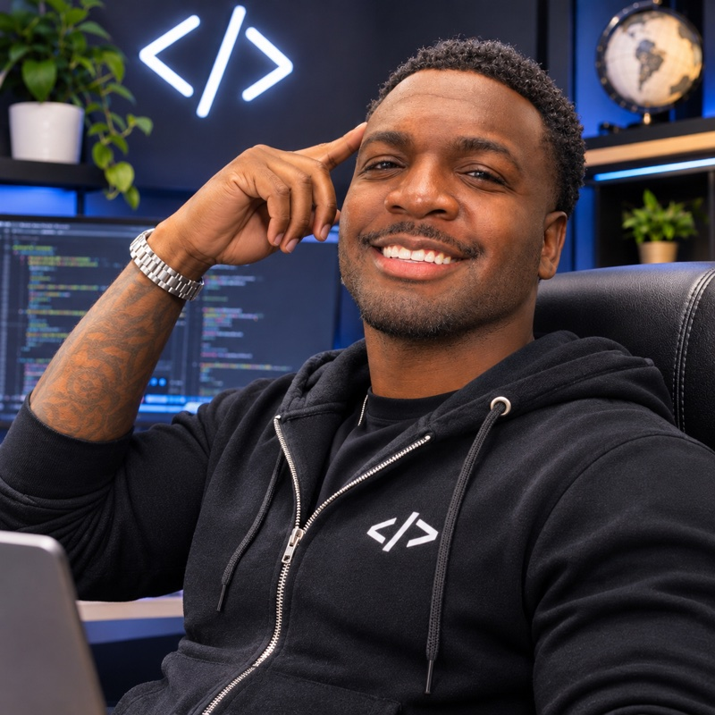

By day I'm an Operations Manager at Way to Go Logistics in Mobile, Alabama, and I've been leading teams since 2013: process improvement, cost control, vendor negotiation and high-performing teams. After hours I'm a builder. I design systems with AI that think in probabilities, read the fine print, and always keep a human in charge.

Work is what I do. This is who I am.
Family comes first. They're my biggest motivation and the reason I keep learning and building.
My favorite hobby. I turn ideas into working tools, like Apex and Career Hunt, and learn something new with every build.
Always up for a good series. Ask me what I'm watching, or tell me what I should watch next.
Every job taught me something I still use: how to run a shift, deliver a project, close a deal, and keep things moving.
Leading logistics operations: keeping freight, vendors, costs and schedules moving in the right direction.
Helped buyers and sellers in Mobile and closed over $2 million in sales every year. Learned negotiation, follow-through, and how to earn trust fast.
Led a team on the floor at the same time: shifts, training and keeping the store running smoothly.
Kept construction projects on schedule and on budget by coordinating crews, materials and timelines.
My first job. Within a year I was managing the store: inventory, bank deposits and everything else a manager does.
Across food service, construction, real estate and logistics, most of my work comes down to three things: getting the right people on the right work, taking waste out of a process, and making sure the numbers tell the truth.
Schedules, coaching and clear expectations, so the team knows what good looks like and can hit it.
Find where time and money leak, change one thing at a time, and measure whether it actually worked.
Negotiate fairly, track what we're really paying for, and keep inventory and spend under control.
I like meeting new people and helping where I can. If any of these sound like you, reach out.
I'll help turn it into something that updates itself, checks itself and tells you when something's off.
A fresh set of eyes on the steps, the handoffs and the numbers, with practical changes you can undo if they don't work.
I'll show you how I actually use AI coding tools, the honest version: what works, what doesn't, and where you still need judgment.
Operations, logistics, data or sports analytics. I'm always up for a good conversation.
One crunches sports data around the clock, one helps people stay genuinely connected, and one explains the stock market in plain English. Same habits in all three: test it, measure it, keep a human in charge.
Apex prices sports player props around the clock. It collects data, runs it through a probability model, checks it against sportsbook prices, posts ranked boards to Discord, and grades every pick against the real result. I designed and directed it and built it with AI coding assistants.
It's the same operations mindset: test before you trust, measure everything, make every change reversible.
*Official tracker, Oct 22 – Nov 15, 2026. A research project: it doesn't place bets and isn't betting advice.
A Discord command center for job hunting and networking. It drafts LinkedIn posts (each with its own image), turns new connections and messages into suggested replies, keeps a simple contact list, and reminds me to follow up. Nothing goes out until I tap ✅ Approve, and I send every message myself.
Built to stay honest: no scraping and no bot logging in as me. It uses LinkedIn's own emails and official posting API.
A research bot that explains companies the way a friend would. It sends a morning brief for my watchlist, earnings alerts, and an AI read on each headline (good, bad or noise, and how big a deal). It also digs through public SEC filings for leadership background and the smaller suppliers behind big companies. Every finance word gets defined where it's used.
A learning tool, not financial advice. It never places trades.
Paper looks great until the first busy Monday.
If it's not on a scorecard, you can't fix it.
The best changes can be undone in five minutes.
The people doing the work spot problems before any report does.
Whether it's a role, a project, or just comparing notes on operations and data, I'd love to hear from you. LinkedIn is the best place to reach me.